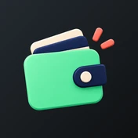
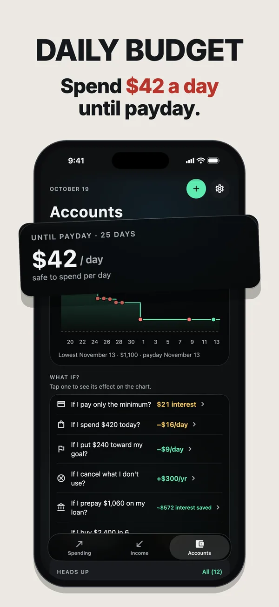
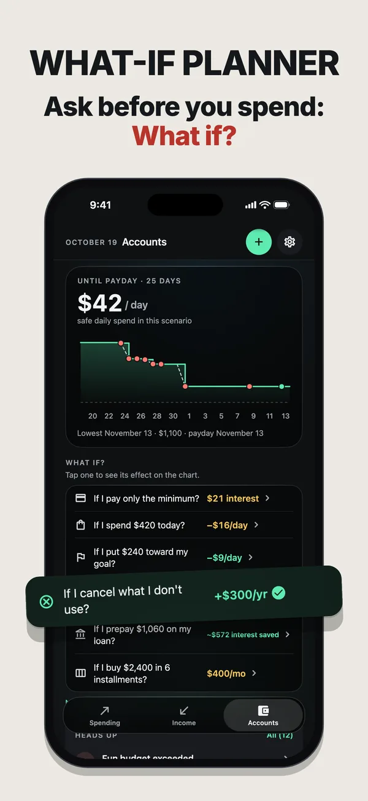
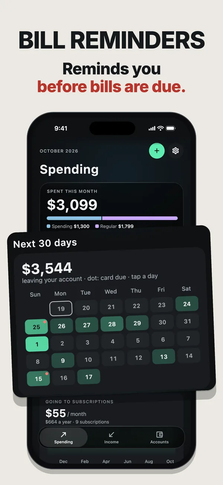
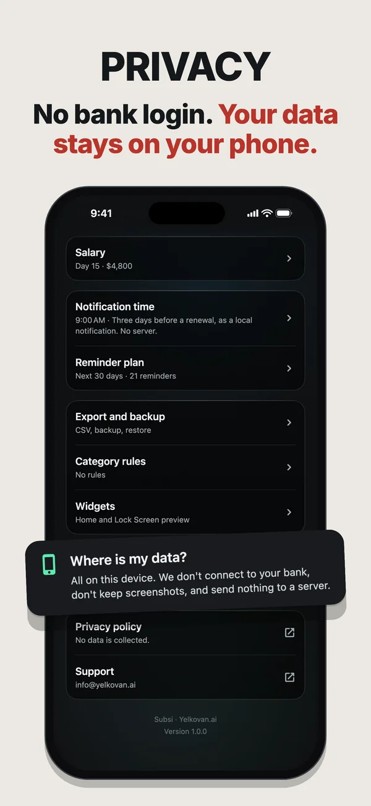

Subscription tracker app Subsi
Subsi keeps your subscriptions, bills and card payments in one place. It flags price hikes, asks about the subscriptions you don't use, and works out how much you can spend each day until payday. It never connects to your bank and needs no account; everything stays on your phone.

Price-hike and renewal reminders
Flags a subscription that got more expensive and asks "Did you use it in the last 30 days?" before it renews. It doesn't cancel anything for you; it shows what's being wasted, and you decide.
Daily budget until payday
Shows how much you can safely spend each day until payday. Ask before you spend: what if I pay only the minimum, or pay in installments?
No bank connection
No account or sign-in, the app never goes online and collects no data. Everything stays on your phone.



Subscription tracking: everything in one list
Your subscriptions sit on one screen with their total: what renews when, what it costs, which card pays for it. Streaming and music, cloud storage, gym, news memberships, whatever the category. Bills, card due dates and loan installments show up on the same 30-day calendar.
There are three ways to add them:
- By hand: the + at the top right adds a subscription, bill, installment or card statement.
- From a screenshot or PDF: pick a screenshot of your subscriptions list, a bill or a card statement PDF; Subsi shows what it found and you choose the ones that are right. Reading happens on your phone and the file is never uploaded.
- From the Share menu: Share › Subsi from Photos, Files or email.
Renewal reminder and price-hike alerts
Subsi marks a subscription whose price went up and shows what the difference adds up to over a year. Subscriptions that start with a trial carry a "trial" tag. For renewals, bills, card due dates and loan installments it sends a local notification before the day; you pick the time.
Before a renewal it asks "Did you use it in the last 30 days?" The renewal question also has a "Cancel steps" option; the cancelling itself is still yours to do.
The subscriptions you don't use
A subscription you say you don't use gets marked. In "What if?" you see, with your own numbers, how your yearly total changes if you drop the ones you don't use. Subsi shows what's being wasted; it never cancels anything on its own.
Daily budget until payday
Enter your pay and your balance and the Accounts tab shows how much is safe to spend each day until payday. Every expense moves the step on the chart and the daily number. Income and expense tracking, category budgets that warn you before you overspend, savings and goals live in the same app.
You can ask before you spend: what if I pay only the minimum on the card, spend a big amount today, or pay in installments? The effect shows on the chart through the end of the month.
No bank connection, your data stays on your phone
- No bank connection, no account or sign-in.
- The app never goes online and we run no server; the Android version doesn't even have the internet permission.
- No ads, analytics, crash reporting or tracking; nothing is collected.
- For subscriptions or savings in other currencies you enter the exchange rate yourself; the app never fetches rates.
- You decide when to share a backup or a CSV export, and you can delete all your data any time.
More: Subsi privacy addendum. If you wondered how this compares with linking a bank, read budget app without bank linking.
Frequently asked questions
Does Subsi cancel my subscriptions?
No. Subsi doesn't cancel anything for you and never logs in to your accounts. It lists your subscriptions in one place and asks "Did you use it?" before they renew. Cancelling stays with you, in Apple, Google or the service itself.
Does it connect to my bank?
No. There is no account or sign-in. You add spending by hand, from a screenshot or from a PDF; reading happens on your phone and the file is never uploaded.
Does it work on iPhone and Android?
Yes. Get it from the App Store for iPhone and iPad, or from Google Play for Android phones and tablets. A backup file also works between iPhone and Android.
Where is my data, and what if I change phones?
Your data stays on your phone; we have no server. When you switch phones, make a backup in Settings and restore it on the new one. You decide when to share a backup or a CSV export.
Is Subsi paid? Is there a subscription inside?
Subsi is a one-time purchase. There are no subscriptions, no ads and no in-app purchases. The current terms are on the store page.
Where does my file go when I add from a screenshot?
Nowhere. The text in an image or PDF is read on your phone; Subsi shows what it found and you pick the ones that are right.
Guides
- Budget app without bank linking: what you give up, what you keep, and how Subsi adds entries
Support · Privacy addendum · Subsi is made by Yelkovan (Yiğit Özdemir).